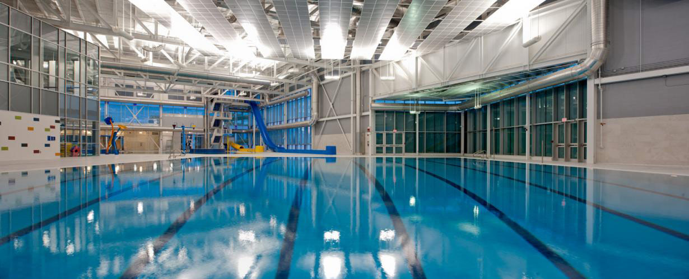
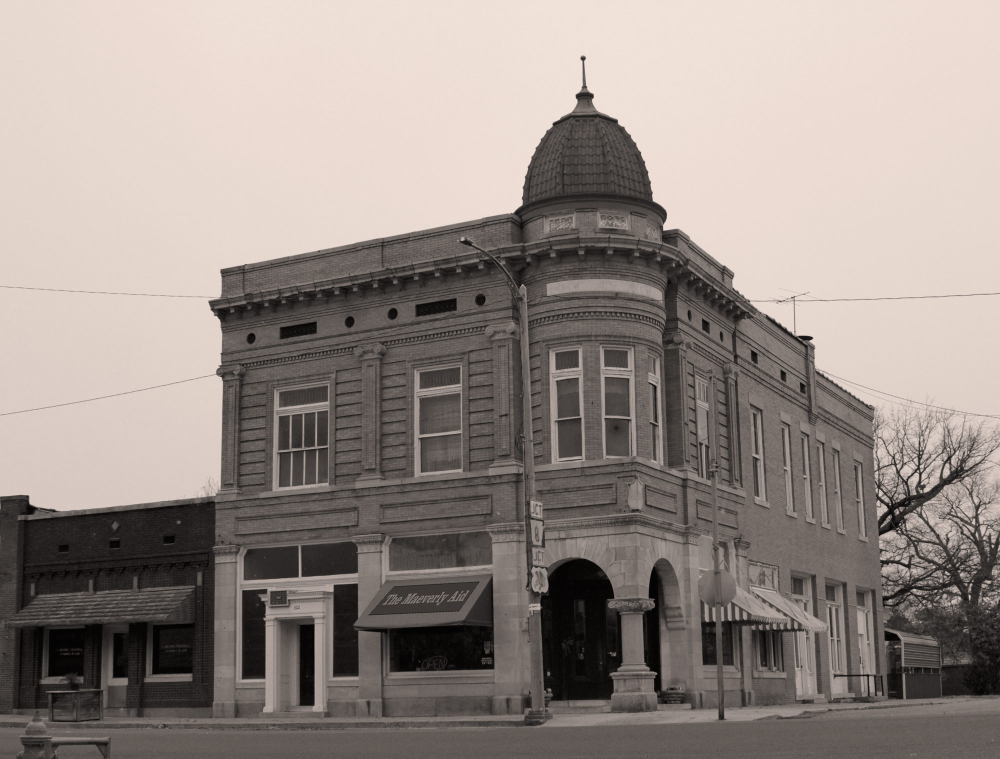

About MCC
Maeverly Community Centre resides within the Maeverly South Hamlet of Windershire Ontario. Located in the heart of the community, MCP offers a wide variety of activities from leisurely swimming to classes and certifications as well as after school programs and summer camps. A ful list of our programs can be found under Schedule.

Maeverly Community Centre, 2013
MCC History
MCP is a historical site in Maeverly South Hamlet. Once called the Maeverly Aid, MCC first opened its doors on April 14, 1946 as a rehabilitation centre for World War Two veterans.
After four years of success, MCC became a public community centre, its main focus, the pool. It became the highlight of the community and, in 1953, began hosting social events, such as summer barbeques and Christmas bazaars, to help bring the community closer together. These events still continue today.
In 1959, MCP adopted the name, Maeverly Community Centre, and introduced its first swim team made up of seven participants—the Maeverly's. Now, in 2013, the Maeverly's have grown to over 150 athetes with countless awards in championship swimming.

The Maeverly Aid, 1946